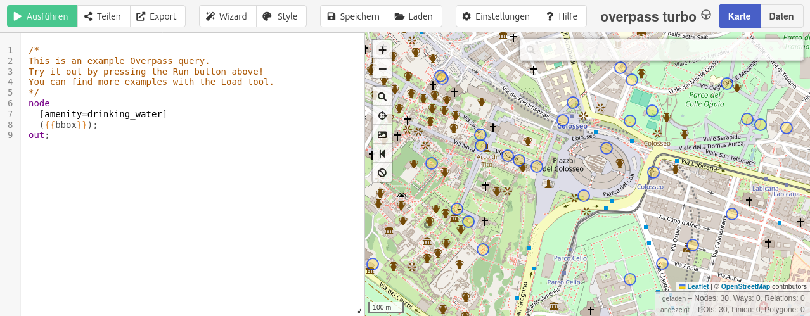

Tutorial
Make sure you have installed Overpass.jl before starting this guide.
Get OpenStreetMap data
This package makes it easy to retrieve OpenStreetMap data using the Overpass API and its query language. Since the Overpass query language can be complex at times, this tutorial offers a simple workflow to help you create your queries more easily.
Building queries with Overpass Turbo
Overpass Turbo, with its graphical web interface, is a great tool for creating and testing queries. Overpass.jl supports custom Overpass Turbo queries[1], so there is no need to rewrite them.
After creating a query, it can be exported from Overpass Turbo by Export > Query > Raw query.
 Screenshot of Overpass Turbo
Get data using Overpass.jl
You can load your query directly from a file using Overpass.query(<filename>). This will read the query from the specified file and execute it.
/*
This is an example Overpass query.
Try it out by pressing the Run button above!
You can find more examples with the Load tool.
*/
node
[amenity=drinking_water]
({{bbox}});
out;Content of waterfountains.overpassql
using Overpass
Overpass.query("waterfountains.overpassql", bbox=(48.22, 16.36, 48.22, 16.36))"<?xml version=\"1.0\" encoding=\"UTF-8\"?>\n<osm version=\"0.6\" generator=\"Overpass API 0.7.62.4 2390de5a\">\n<note>The data included in this document is from www.openstreetmap.org. The data is made available under ODbL.</note>\n<meta osm_base=\"2025-01-15T23:43:01Z\"/>\n\n\n</osm>\n"To keep the package small and flexible, the response is returned as a string instead of being parsed. Depending on your needs, you can then parse the string, save it, or process it further.
Debug and edit query in Overpass Turbo
Editing and debugging a raw Overpass query can be challenging. To simplify the process, you can generate a link to your console that opens Overpass Turbo with your query. In Overpass Turbo, you can then edit the query and download it again.
@info Overpass.turbo_url("waterfountains.overpassql")[ Info: https://overpass-turbo.eu/?Q=%2F%2A%0AThis%20is%20an%20example%20Overpass%20query.%0ATry%20it%20out%20by%20pressing%20the%20Run%20button%20above%21%0AYou%20can%20find%20more%20examples%20with%20the%20Load%20tool.%0A%2A%2F%0Anode%0A%20%20%5Bamenity%3Ddrinking_water%5D%0A%20%20%28%7B%7Bbbox%7D%7D%29%3B%0Aout%3BChange Overpass endpoint
You can set a custom endpoint for the Overpass API. The default endpoint is https://overpass-api.de/api/. You can find a list of other endpoints in the OpenStreetMap Wiki.
The endpoint URL must include a trailing slash
Overpass.set_endpoint("https://overpass.private.coffee/api/")Endpoint status
You can check the current status of the Overpass API endpoint to see if it's working properly.
Overpass.status()Overpass.Status("338300577", Dates.DateTime("2025-01-15T23:44:07"), "lambert.openstreetmap.de/", 6, 6)Status provides the following fields:
- connection_id::String
- server_time::DateTime
- endpoint::Union{Nothing, String}
- rate_limit::Int
- avalible_slots::Union{Nothing, Int}
Supported Overpass Turbo shortcuts
These Overpass Turbo shortcuts are supported:
| Shortcut | Status |
|---|---|
| {{bbox}} | supported |
| {{center}} | supported |
| {{date:string}} | supported |
| {{geocodeId:name}} | not yet supported |
| {{geocodeArea:name}} | not yet supported |
| {{geocodeBbox:name}} | not yet supported |
| {{geocodeCoords:name}} | not yet supported |
- 1Full support of Overpass Turbo shortcut is still work in progress. See list of supported shortcuts